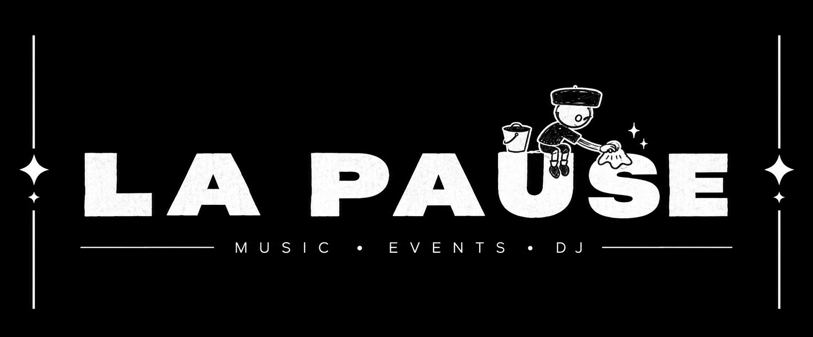

Our story
From the decks to the DAW.
La Pause is a French studio. It grew out of music, events and DJ sets, and now also builds plug-ins for the people who play and produce music.

How it went.
[YEAR]
La Pause starts
[How La Pause started: where, with whom, the first events and DJ sets.]
October 2026
Twenty3FX
The first plug-in: the effects of a DJ mixer, in your DAW. Twenty tempo-synced effects on one dial.
November 2026
Kick vs Bass
The bass steps aside only where and when the kick hits.
November 2026
Vocal One
A whole vocal chain in one window, with presets by genre.
Next
More plug-ins
Every new release goes to All-Access Pass holders.